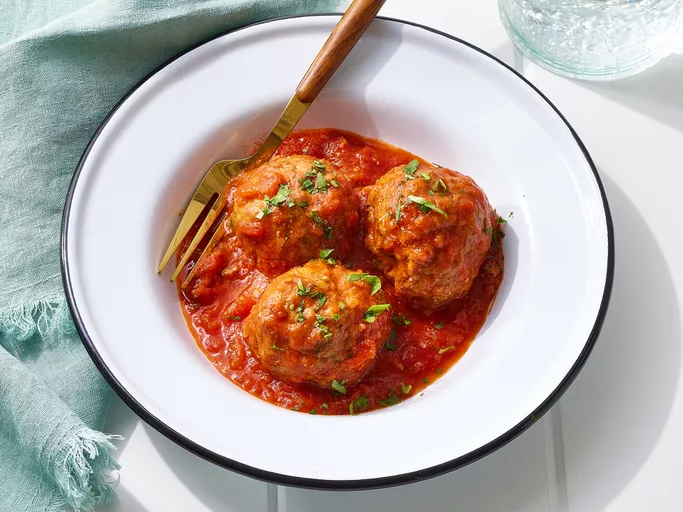

Homemade Meatballs
Home

Fresh Meatballs From Scratch
Beef and pork meatballs that pair great with homemade "Sunday Sauce", your
favorite pasta, or just by themselves. Made with fresh herbs, spices, and
breadcrumbs, this dish will transport you to the land of Italiano with a savory,
juicy profile, and smells that will have you begging for more. Makes 12-16 meatballs depending on size.
- 1/2 cup fresh breadcrumbs (store-bought is just fine)
- 1/4 cup milk
- 2 egg yolks
- 1/2 cup grated pecorino romano
- 2 garlic cloves, grated or fine chopped
- 1 tsp salt
- 1 tsp fresh ground pepper
- 1 lb ground beef or chuck
- 1 lb ground pork
- 1/3 fresh basil
- 1 tbs oil
- Gather and prep all ingredients before begining.
- Thoroughly combine all other ingredients in a large bowl.
- Grab a baking sheet and line with wax paper or parchment paper.
- Roll mixture in to balls that are approximately 6 oz each (you can make these smaller or larger, keep in mind the yeild will change accordingly).
- Place baking sheet with meatballs in the fridge for 20 minutes to firm.
- Heat oven to bake at 350 degrees.
- In a large, stainless steel pan (recommended, but your favorite pan will do), heat 1 tbs oil to medium-high heat.
- Gently place meatballs in stainless steel pan, and sear on all sides until evenly brown. (don't worry about temperature, we'll finished these off in the oven).
- Once seared and brown, place entire pan in oven, and bake for 15-18 minutes, or until internal temperature reaches 155 degrees F.
- Using a pot holder or oven mitt, carefully remove the pan and place on trivet to cool.
- Plate and serve with homemade red sauce. Optionally, garnish with fresh parsley.